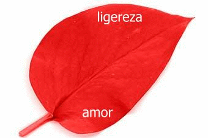

Kendimi biraktigim, hayatimim ve de senin en cesur g�n�yd�.
��imdeki hisleri dusundugumde bir yanda patlarcas�na zerrecikler halinde
ucuyordum, di�er tarafta ise endi�lerim art�k eyleme ge�mi�ti.
Hi� bitmemesini, seni o cihangir odas�ndan hi� ��karmamay� istedim.
Ama seni anlamam��t�m, ta ki takside elini tuttu�umda ona s�ms�k� sar�lmana
kadar.
